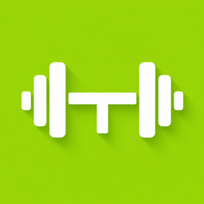

EljaTrack your workouts. Share your progress.
Need help? Email us and we’ll get back to you as soon as we can.
Open the app and sign in with Apple or Google, or tap “Or sign up with email” to create an account with an email and password.
On the sign-in screen tap “Or sign up with email”, then Log in → Forgot password?. Enter your email and we’ll email you a code — type it into the app together with your new password. If you signed up with Apple or Google, use that button instead — there’s no separate password.
Tap the create button, name your workout, add exercises and sets, and tick off each set as you go — a rest timer starts automatically. Finish to save it and post it. You can save workouts as reusable templates.
Go to Profile › Settings and choose kg or lbs. Your choice is saved to your account, so it follows you to other devices.
You choose for each post: Public, Followers only, or Only Me. You can make your whole account private so only approved followers see your posts, and you can hide your weights from other users.
Go to Profile › Settings › Export workouts (CSV). You’ll get a spreadsheet with every set you’ve logged.
Go to Profile › Settings › Advanced › Delete Account. This permanently deletes your account and all of its data. You can also email eljafitness@gmail.com from your account’s email address and we’ll do it for you.
Use “Report” in a post’s menu or on a profile, or block the account from its profile. Blocked accounts can’t see your posts, follow you or message you.
Check that notifications are on in Profile › Settings and in iOS Settings › Notifications › Elja. You can choose which kinds you receive (likes, comments, followers, mentions, messages, friends’ posts).